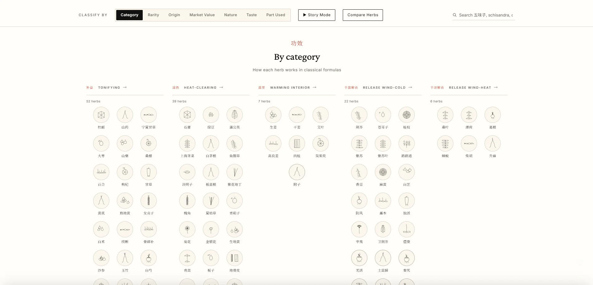

Visual Catalogue / TCM
The Herbs of Chinese Medicine
Year
2026
Category
Data Visualisation
Medium
Interactive Visual Catalogue
Location
Zhengzhou, China
An editorial visual catalogue of 194 substances used in traditional Chinese medicine — plants, fungi, minerals, and animal parts — laid out by what they do, where they come from, and how rare or precious they are. Each herb is rendered in classical woodblock style across five classification views (category, nature, taste, rarity, part used), with an interactive provincial map of origin, hover detail cards, side-by-side comparison, and a guided story mode.
View Live ->
